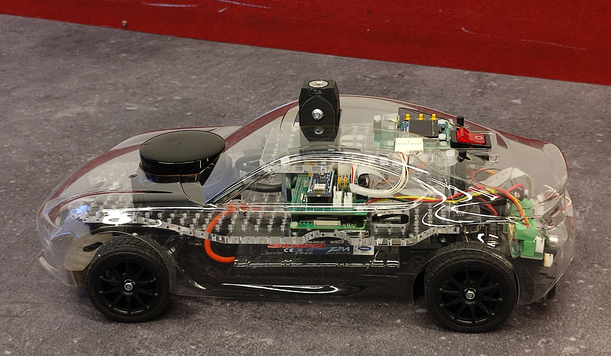
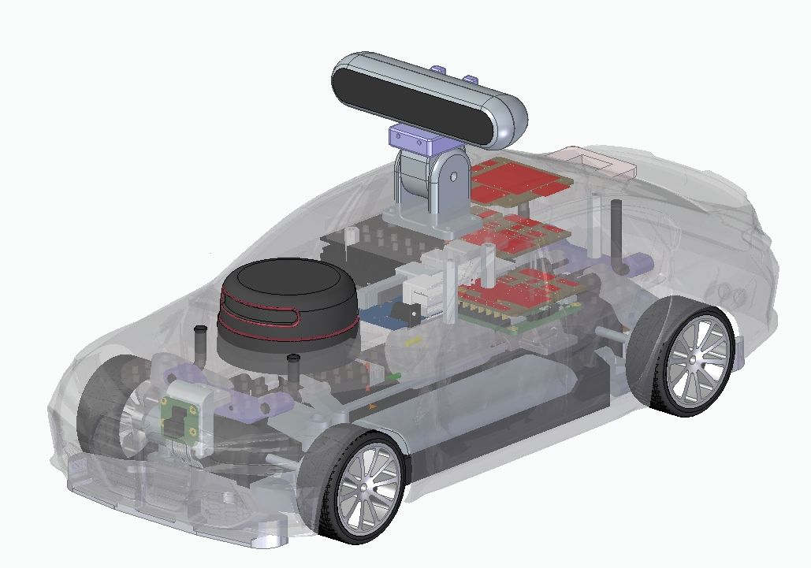

Standard Car for the Paris-Saclay Autonomous Car Race
A standard car is offered for the autonomous car race. The complete kit and the kit containing {electronic boards, specific mechanical parts} have been available for purchase since January 2023, especially for teams without mechanical and/or electronic manufacturing capabilities.
This standard car is just an example to help teams get started. It is meant to be improved and expanded.


Control System
The block diagram of the control system is as follows, with several options for lidars, cameras, single-board computers, or microcontrollers:

The electronic schematics in Eagle and PDF format are provided in the Hardware folder of the Git repository
Mechanics
Mechanical parts allow the TT-02 chassis to be adapted to these control system components. STL files are provided in the Hardware folder of the Git repository

In addition to custom bodywork, the main feature of this kit is the modification of the drive shaft gear, the addition of an optical fork, and a new housing to allow measurement of the motor speed.
The kit notably offers the possibility to use a digital AX-12 servo motor instead of the standard analog servo.

Finally, the 3D parts allow for proper mounting of sensors at the front (Raspberry camera) and at the rear (IR and/or ultrasonic rangefinders).

Parts List
Here is a list of equipment, suppliers, and indicative prices (including VAT).
- Tamiya TT-02 Toyota GR 86 KIT ref 58694 - RCTeam 58694 - €134.90
- Konect Servo 9kg 0.13s Digital KN-0913LVMG - RCTeam KN-0913LVMG - €19.90
- ORION Charger IQ801 1A - RCTeam ORI30197 - €15.90
-
T2M Battery 7.2v Nimh 3000mah - RCTeam T1006300 - €27.30
-
Raspberry Pi 4 Model B - Kubii PI48GB - €94.50
- Official Black Micro-HDMI to HDMI Cable 1M - Kubii SC0270 - €4.80
- Micro-SD Card Class 10 32 GB - Kubii KG32_DEL - €8.94
- Official Power Supply for Raspberry Pi 4 15.3W USB-C - Kubii ALIMPI4 - €9.60
- Camera Module v2 8MP - Kubii 2510728 - €25.80
-
Ribbon Cable for Raspberry Pi Camera 30 cm - Kubii kub1645-PRD - €0.96
-
RPLIDAR A2M12 360 Laser Scanner Slamtec A2-M12 - Roboshop RB-Rpk-22 - €269.03
-
USBA – microUSB Cable 20 cm - RS 182-8869 - €3.14
-
Sonar Module SRF10 Devantech - Roboshop RB-Dev-10 - €36.86
- Absolute Orientation Module 9 DOF BNO055 Devantech - Roboshop RB-Dev-91 - €31.73
- Nucleo-G431KB Microcontroller Board - Farnell 3132398 - €10.89
- RS PRO USB Cable, Micro-USB B to USB A, 0.5m - RS 236-9078 - €2.89
-
Optical Fork with cables OPTEK TECHNOLOGY OPB815WZ - Farnell 1497919 - €5.39
-
Total for off-the-shelf modules ~€725
Options:
It is possible to replace the Raspberry Pi 4 single-board computer with a Raspberry Pi 5 (which then needs cooling) or a Jetson Orin GPU board. Qualcomm/Thundercomm also offers a similar board, the Rubik Pi 3.
Digital servo motor instead of the standard analog steering servo:
- Dynamixel AX-12 Digital Servo Motor - Gotronic 36433 - €41
Camera to be placed on the roof:
- Realsense D435i Camera - Digikey 2311-82635D435IDKMP-ND - €445.54
The Ménagerie Technologique offers all the electronic boards for the standard car for €250 and all the mechanical parts for 260 €.